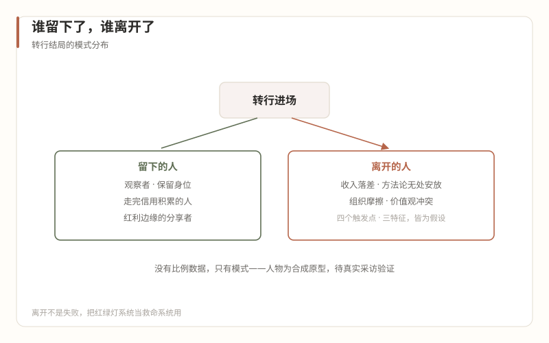

3会经历什么
谁留下了，谁离开了
本篇回答：转行的结局分布。先读开头的素材声明，它比正文更重要。
一、素材声明：本篇的诚实边界
全系列到这里，每篇的事实都有语料出处。本篇是例外，必须先说清楚：
语料没有从业者流动的系统数据——谁进来了、谁留下了、为什么走，没有文章统计过。所以本篇的人物是人物原型：依据前十二篇的语料事实、公开的从业者自述（职场社区与社交平台上的转行叙事、行业访谈类内容）与转行社群的常见经历，合成的典型画像。每个人物身上发生的事，都对应本系列前文引用过的某条结构事实——这是他们"真实"的部分；具体的人名、机构、数字是为叙事需要构造的——这是他们"虚构"的部分。
正式发布前，本篇应以真实采访替换或验证（列入系列核验清单）。在那之前，请把它当作"模式假设的具象化"来读，不要当作案例库引用。
二、五个人物原型
原型一：14 个月后离开的投放经理
前大厂商业化团队，入职一家直客机构做投放负责人。前三个月的剧本近乎完美：渠道到店量涨了四成，老板在例会上三次点名表扬。
决定性瞬间发生在年底复盘。他调出全年的收银和划扣数据对齐——第 10 篇说的那张手工私账——发现自己引来的低价客群，转化率不到 5%，交付端却为这些到店支付了全额的咨询、面诊、操作成本。他拿着两张表去找老板，老板看完说了句让他记到现在的话："我知道亏。但店里得有人气，没人气连亏的资格都没有。"（对应第 03 篇："营业额越多可能亏损越大"是机制，不是失误。）
他开始找工作是在第二年的春天。离职时猎头问他转行感受，他说："我没有失败，我只是算清了一笔账——那家机构要的是人气，我要的是利润，我们都没错，只是不匹配。"
模式假设：离开触发点之一——方法论无处安放。 他不是干不了，是干的事情在财务上不成立，而他没有权力改变它成立的方式。
原型二：转平台方的运营总监
前大厂本地生活业务，考虑转行时同时拿了机构端和平台方的 offer，选了平台——医美垂类的行业运营。
三年后她在平台带一个小组，负责机构商家的经营辅导。她对行业的了解不输机构端同行：她看过几百家机构的数据，知道哪类机构在什么模式上赚钱、什么话术在什么城市高频出现。但她也清楚自己的位置："我在行业里，又始终不在行业里。纠纷、返修、医生离职、老板娘换人——这些我都知道，但都是听来的。"（对应第 06 篇入口一："隔着玻璃看行业"的观察哨位。）
她不后悔这个选择，但有一个提醒给后来者："别把平台当成转行的中转站来规划——平台待久了，机构端反而不会要你了，他们觉得你只会看数不会干活。想中转，两年内走。"
模式假设：留下者的形态之一——保留身位的观察者。 留下，但留在玻璃的另一侧；代价是行业信用的积累始终隔着一层。
原型三：做到经营院长的前市场负责人
前大厂市场部中层，35 岁入场，从一家中型机构的"营销经理"做起——职级比大厂降了两级，薪水打了六折。
她的路径是五个人里最完整的"活下来"路径：前六个月只做两件事，学行业语言（把公开的医美科普系列当教材读）和跟诊（每周至少两次坐在面诊室角落听医生和客人的对话）。转机在第八个月：一次医疗纠纷，她按预案把流程处理得干净利落，主诊医生第一次在机构群里公开谢她。（对应第 11 篇：安全感是这个行业的硬通货。）
第三年她升任经营院长。第四年，她经历了一次本篇最重要的结构性事件：与股东医生在项目重点上发生分歧，她占理——事后连老板都承认——但离开的是她。（对应第 04 篇底线条款："一旦与股东医生发生冲突，牺牲的只能是非医疗人员，包括经营院长自己。"）她在另一家机构重新做起经营院长，比第一次从容得多。
她的话："这个行业没有公平的裁决机制，只有信任的复利。信任攒够了，冲突就伤不到你；没攒够，占理也没用。"
模式假设：留下者的形态之二——走完信用积累全流程的人。 她的路径里没有奇迹，只有第 10、11 篇写的那些事，按顺序发生，她都接住了。
原型四：进上游的品牌经理
前大厂品牌营销，转行选了上游厂商——玻尿酸与光电设备的市场岗。
她形容这份工作"像回到了快消"：学术会议、机构拜访、医生教育、季度 marketing plan。医疗属性是薄的——她不需要面对求美者，不需要处理纠纷，甚至很少进机构后台。行业红利她也确实沾到了边：行业扩张期，厂商市场预算充足。
她的清醒在于对周期的感知："证书红利在消退，我们自己的产品线两年内从三张证变十几张证，渠道政策一年比一年紧。上游的日子还是全行业最好过的，但'最好过'的标准在往下修。"（对应第 03、05 篇：上游最厚、红利期已过、开始卷。）
模式假设：留下者的形态之三——行业红利的边缘分享者。 进了行业但站在交付现场之外，收益与行业的 Beta 相关，个人手艺的 Alpha 有限。
原型五：回大厂的前增长负责人
前大厂增长团队，机构端干了 11 个月，回大厂了。触发事件与第 12 篇的星期二同构：一次被要求签字确认的夸大宣传物料，越过了他自己入职时写下的清单红线。他拒签，被绕过，物料照发。他提了离职。
回去之后的工作顺利，但有一个后遗症他没预料到："我现在刷到医美广告会本能地拆解它的合规风险，看到同行做的案例图会想授权拿到了没有。回不去了——不是回不去大厂，是回不去'不知道'。"
他给自己的转行下了个结论："我不后悔。我用 11 个月买了一双再也摘不掉的眼睛，这比多数人买得便宜。但如果重来一次，我会在入职前把那份物料的话术风格查清楚——红线暴露得那么明显的机构，其实第一周就看得见。"
模式假设：离开触发点之二——价值观冲突。 注意他说的最后一句话：多数"价值观离职"的线索，尽调阶段就在明处摆着（第 09 篇第五查）。
三、模式归纳：四个假设 + 三个特征
把五个人物的轨迹投影到前十二篇的结构上，得到两组假设。再次强调：这是假设，不是统计。
离开者的触发点，四个假设：
- 收入落差（隐性，慢性）：底薪提成制与大厂总包的差，在生活质量上逐月显形——最常出现在第 6-12 个月；
- 方法论无处安放（原型一）：能力与机构需求错配，干得越多错得越多；
- 组织摩擦（未在原型中展开但高频出现）：老板文化、多本账、朝令夕改——大厂职业化训练越深，摩擦成本越高；
- 价值观冲突（原型五）：灰色越过个人红线，通常是压死骆驼的最后一根稻草，但很少是第一根。
留下者的特征，三个假设：
- 手艺心态：把行业当长期手艺场而不是跳板或金矿，接受"信用复利"的慢（原型三）；
- 杠杆点明确：清楚自己被市场采购的是哪一角（第 06、07 篇），不做全才梦（原型二、四各守一角）；
- 对乱象有心理预案：入职前就接受"灰色是气候不是事故"（第 12 篇），所以灰色出现时不崩溃、只定级。

四、没有比例，只有模式
最后如实交代：留下与离开的比例，本系列没有数据，语料没有，行业也没有可信的统计。能给的最诚实的框架来自语料的一段话——行业谷底阶段，"有人在谷底照样捞钱，有人在往趋势上布局，当然也会有大聪明两头下注，风险对冲"（《乱象之外》，2025-07-22）。
转行者的结局分布同理：没有单一剧本，只有几种模式。区别在于，行业里的三种人是在用资金和站位下注，而转行者的筹码是自己的职业生涯——这张牌桌的下注额，只有你自己清楚。
下一个问题——如果你的手里恰好还握着一张名校的牌，这张牌在这张桌上值多少？第 14 篇开始专门算这笔账。
键盘 ← → 可翻篇，手机屏幕左右边缘滑动同样有效